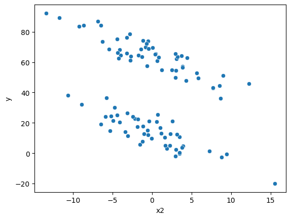
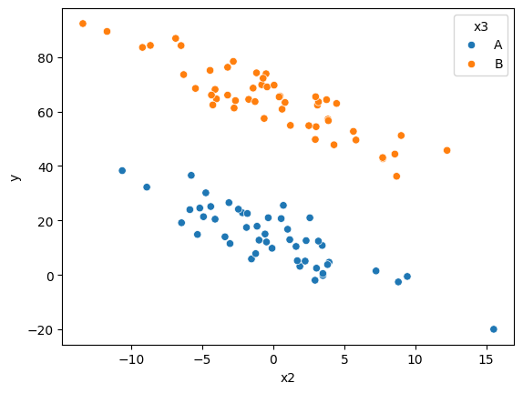

import sys
def get_env():
sp = sys.path[1].split("/")
if "envs" in sp:
return sp[sp.index("envs") + 1]
else:
return ""
get_env()'fast_ai_course_2022'import sys
def get_env():
sp = sys.path[1].split("/")
if "envs" in sp:
return sp[sp.index("envs") + 1]
else:
return ""
get_env()'fast_ai_course_2022'import numpy as np
import pandas as pd
import seaborn as sns
import matplotlib.pyplot as plt
from patsy import dmatrices, dmatrixn = 100
sd = 2
dat = pd.DataFrame()
dat["x1"] = np.random.normal(0, 5, n)
dat["x2"] = np.random.normal(0, 5, n)
dat["x3"] = np.random.choice(["A", "B"], size=n, replace=True)
dat["epsilon"] = np.random.normal(0, sd, n)
X = dmatrix(" ~ x1 + x2 + x3", dat)
X.design_info.column_names
beta = [14, 50, 1, -2]dat["y"] = np.matmul(X, beta) + dat["epsilon"]
dat| x1 | x2 | x3 | epsilon | y | |
|---|---|---|---|---|---|
| 0 | -2.157284 | 3.042443 | A | -3.271442 | 2.486387 |
| 1 | -3.458105 | -6.317998 | B | 0.370765 | 73.548654 |
| 2 | 4.439751 | 3.108154 | B | 0.114254 | 62.337697 |
| 3 | -3.059616 | -5.881156 | A | 1.271250 | 23.973945 |
| 4 | 2.113333 | 9.439539 | A | 2.211661 | -0.554084 |
| ... | ... | ... | ... | ... | ... |
| 95 | 2.378619 | -2.459607 | A | 2.843193 | 24.141026 |
| 96 | -0.802452 | 3.819083 | A | -1.764879 | 3.794504 |
| 97 | -6.072932 | -4.261568 | B | -4.046033 | 62.404172 |
| 98 | 7.436910 | -5.782830 | A | 3.558384 | 36.560954 |
| 99 | -2.709327 | 2.501132 | B | -1.476932 | 54.811477 |
100 rows × 5 columns
sns.scatterplot(data=dat, x="x1", y="y")<Axes: xlabel='x1', ylabel='y'>
sns.scatterplot(data=dat, x="x2", y="y")<Axes: xlabel='x2', ylabel='y'>
sns.scatterplot(data=dat, x="x2", y="y", hue="x3")<Axes: xlabel='x2', ylabel='y'>